Помогаю людям
Мне нравится делиться знаниями, отвечать на вопросы и создавать инструменты, которыми другим действительно удобно пользоваться.
Senior Product Designer / Design System · МТС Финтех
Как мы превратили разрозненные UI-киты в единую систему для 42 продуктовых команд
Контекст
Единой системы для банка фактически не существовало. МТС Финтех — цифровой банк внутри экосистемы МТС. 42 продуктовые команды параллельно развивают мобильный банк (Android, iOS) и веб-платформу.
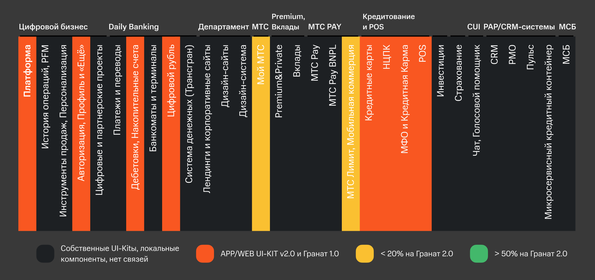
13 UI-китов в дизайне
Разные продуктовые команды использовали собственные UI-киты, компоненты и подходы к проектированию. Один и тот же элемент мог выглядеть и вести себя по-разному в зависимости от продукта, а изменения приходилось поддерживать сразу в нескольких местах.
Каждая команда — свой код
В разработке ситуация была похожей: компоненты дублировались между командами и платформами, а единого source of truth не было.
Adoption — менее 10%
На тот момент дизайн-системой от экосистемы МТС пользовались только
4 команды из 42.
Моя роль
В команде я отвечала за дизайн-направление и развитие дизайн-системы на уровне компонентов, паттернов и пользовательского опыта. Моя работа находилась на стыке дизайна и разработки: от исследования потребностей продуктовых команд и проектирования компонентов в Figma — до их реализации, документации и фронт-ревью.
Помимо развития самой библиотеки, я занималась внедрением системы в команды, обучением дизайнеров и созданием внутренних инструментов и материалов, которые помогали использовать ДС в ежедневной работе.
Senior Product Designer
26.02.2024 – 25.03.2026
Руководитель направления «Дизайн-система»
25.03.2026 – по настоящее время
В управлении команда из 8 специалистов:
01
Компоненты
Проектирование в Figma компонентов для App (iOS/Android) и Web
02
Фронт-ревью и QA
Общение с разработчиками, контроль над реализацией компонентов в коде, тестирование и фронт-ревью
03
Документация
Написание спецификаций, гайдов, запись видео и формирование обучающих материалов
04
Адаптация
Онбординг для дизайнеров, постоянная поддержка и консультирование, ответы на вопросы и созвоны
05
Коммуникация
Введение телеграм-канала с новостями о ДС; регулярное проведение демо ДС раз в 2 недели
06
Развитие дизайн-комьюнити
Проведение мероприятий для дизайнеров, инициирование активностей (например, создала цифровой адвент-календарь в подарок дизайнерам)
От хаоса к системе
Задача была не просто «сделать библиотеку компонентов», а построить инфраструктурный продукт, которым будет пользоваться весь банк. Мы двигались поэтапно, давая командам ценность на каждом шаге.
Фаза 1
Фаза 1
Первый приоритет — убрать хаос. Совместно с продуктовыми командами мы начали переход на существующую дизайн-систему Granat от МТС. Цель этого этапа — не идеальная ДС, а единая точка входа: одна кодовая база вместо тринадцати.
Фаза 2
Фаза 2
Стратегическое решение: не форкать, а строить поверх. Мы взяли Granat как основу — единый стиль, единый визуальный язык экосистемы МТС — и на этом фундаменте начали создавать собственные финтех-компоненты. Так родилась дизайн-система ASTRA.
Фаза 3
Фаза 3
Мы спроектировали и реализовали более 200 компонентов, в том числе специфичные для банковского продукта: сложные формы, финансовые виджеты, графики, карточные продукты, верификация и другие паттерны.
Следующий шаг: сделать жизнь ещё проще и свести различия между платформами к минимуму. Один компонент на все платформы. Одинаковая реализация.
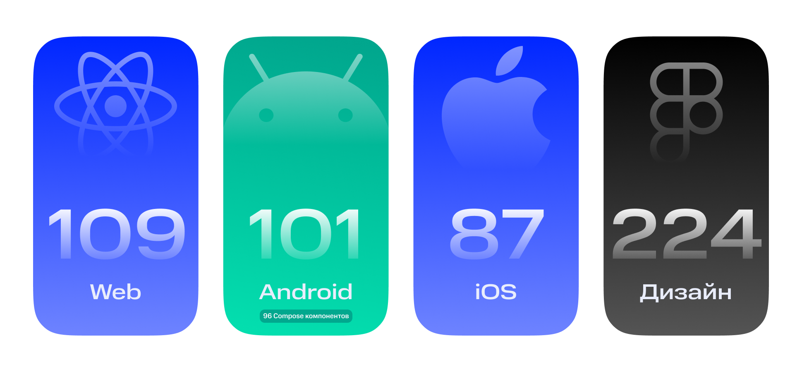
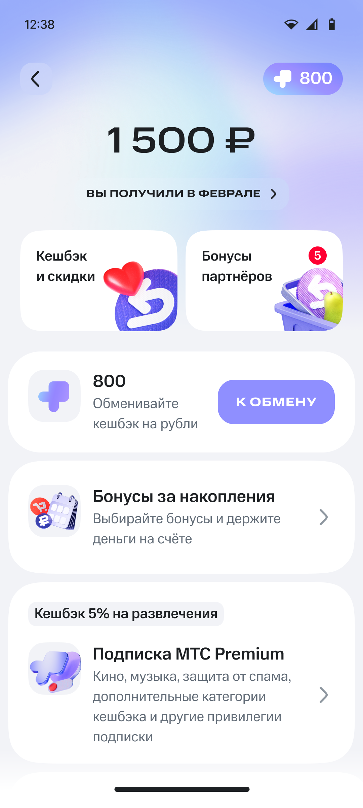
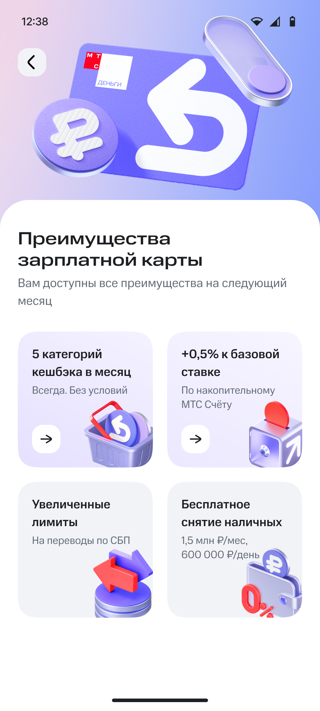
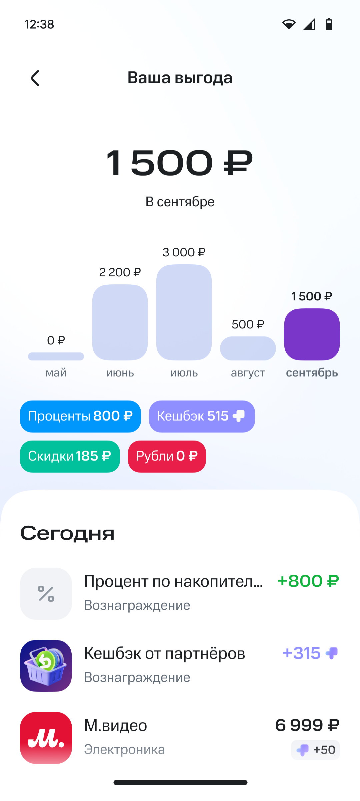
Dark Theme
Как мы с мобильными разработчиками сделали тёмную тему для приложения и проверили более 740 экранов сценариев
Проблема. Запуск тёмной темы требовал не просто заменить цвета в дизайн-макетах. В существующем приложении уже были сотни экранов, использовавших старые цветовые токены. Нужно было понять масштаб проблемы, определить правила замены и убедиться, что после миграции интерфейс не сломается визуально или функционально.
Методология
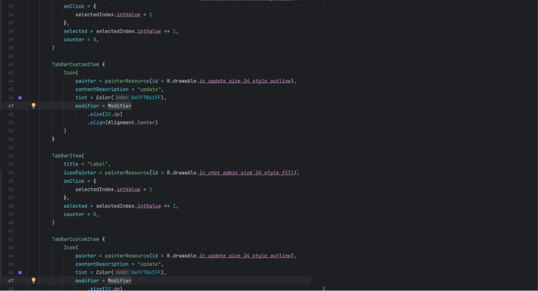
Автоматическая замена
Разработчик дизайн-системы запускал скрипт, который автоматически заменял устаревшие цвета на актуальные согласно заранее определённой схеме.
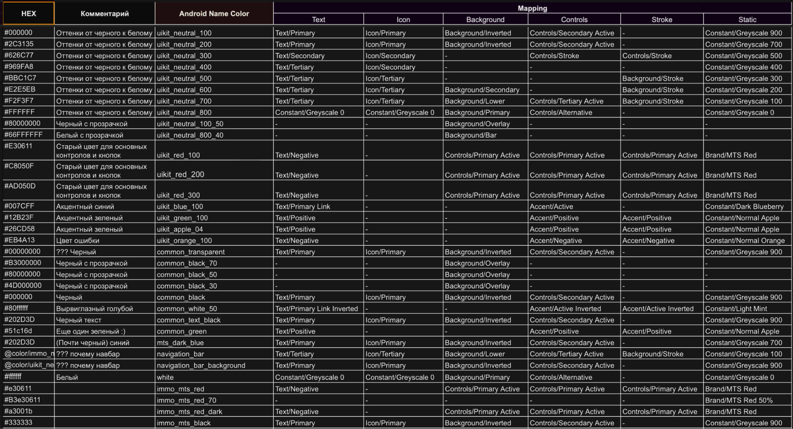
Ручная проверка
Автоматическая миграция не могла покрыть все случаи. Оставшиеся ситуации я разбирала вручную: находила устаревшие цвета, определяла корректный токен и проверяла визуальный результат.
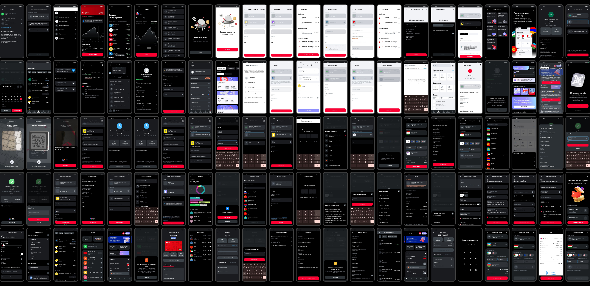
Регресс
После миграции команда провела регрессионную проверку и исправила найденные баги.
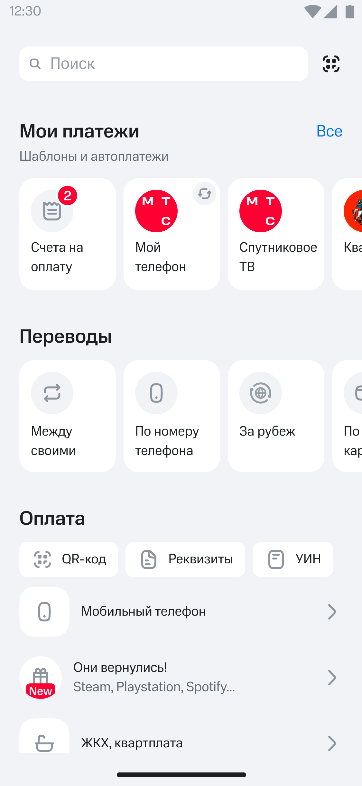
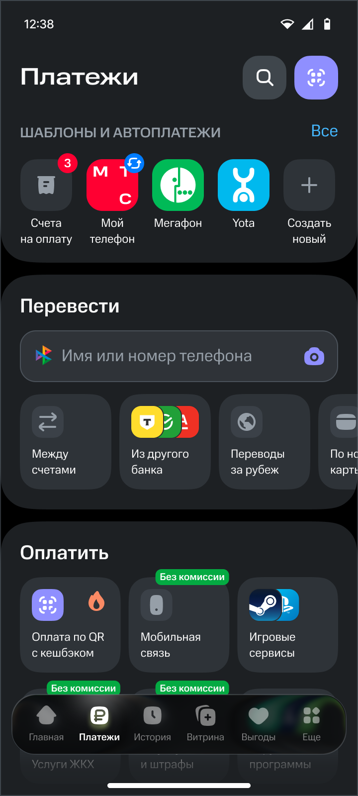
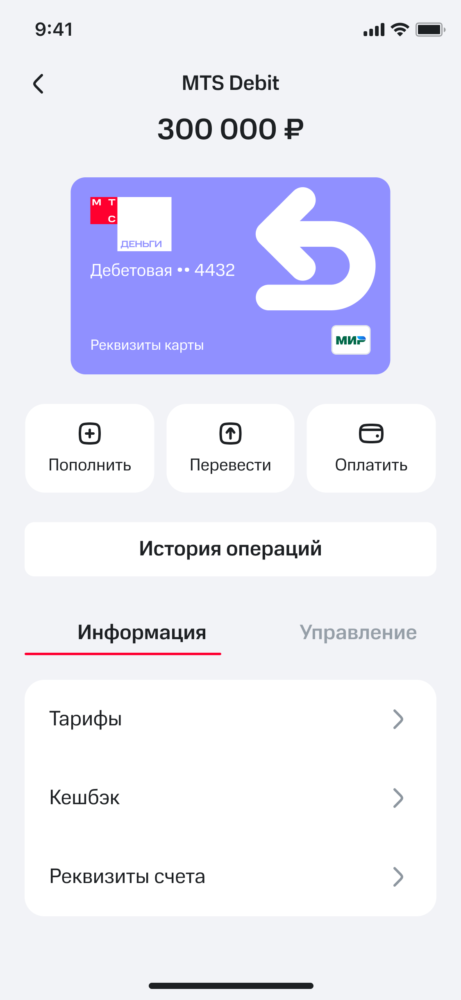
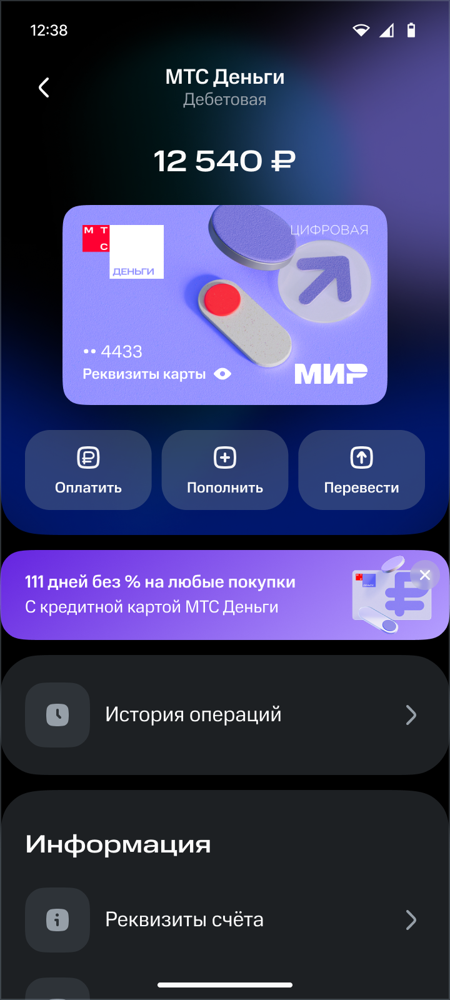
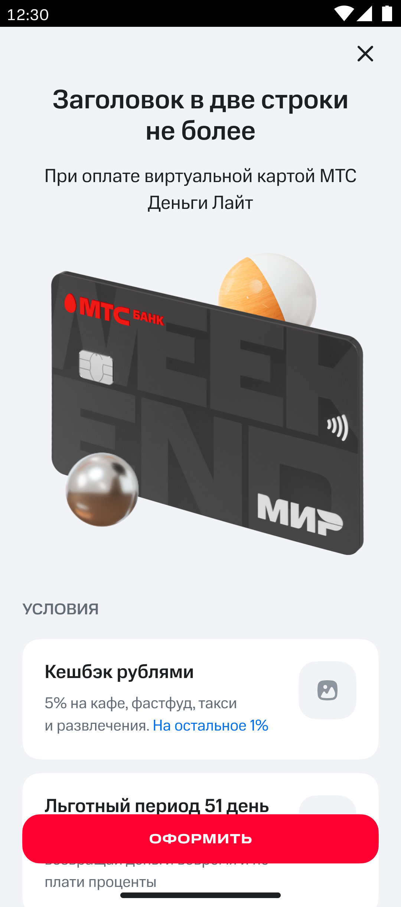
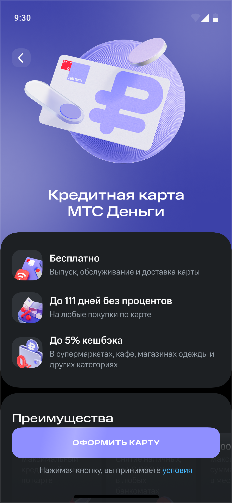
Потяните за ползунок, чтобы сравнить интерфейс до и после
Итог
Внедрили тёмную тему в приложении банка без привлечения продуктовой разработки, которую не удавалось реализовать более 10 лет
Макеты продуктового сценария из 50 экранов
22 часа 3 минуты → 6 часов 58 минут
Дизайн быстрее на
68,4%
Adoption (команды)
4 → 32
из 42 (рост в 8 раз)
Проникновение в коде
38–78%
новые фичи — до 78%
Сокращение Design Time
−29,2%
с 19,3 дня (2024) до 13,87 дня (2025)
Разработка быстрее на
46,2%
фича из 20 экранов: 86 часов 31 минута → 46 часов 33 минуты
Онбординг и библиотека знаний
По мере роста дизайн-системы стало понятно, что одной документации недостаточно. Я создавала онбординги для новых дизайнеров, обучающие материалы и видео, которые помогали быстрее разобраться в принципах работы с ДС.
Отдельно я создала в банке Библиотеку знаний для дизайнеров — единое пространство с материалами, инструкциями и полезными ресурсами. Так дизайн-система постепенно становилась не только библиотекой компонентов, но и точкой входа в дизайн-процессы банка.
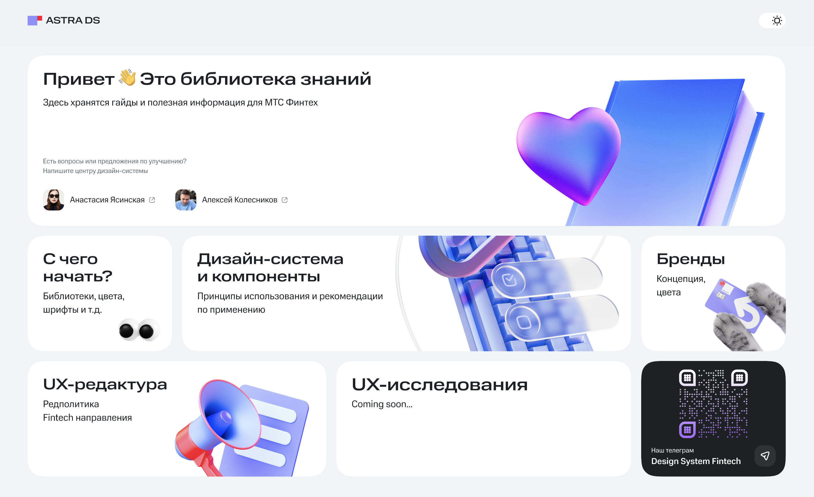
Демо
Я хотела, чтобы команда дизайн-системы воспринималась не как «ребята, которые приходят проверить макеты», а как команда, к которой хочется обращаться. Поэтому я много внимания уделяла внутренним демо.
Каждое демо я превращала в небольшую историю: придумывала отдельную визуальную концепцию, оформляла презентацию в определённой тематике и старалась сделать её не только информативной, но и эмоциональной.
После демо я регулярно получала обратную связь от дизайнеров: они отмечали, что демо дизайн-системы — одни из самых полезных и самых «душевных» внутренних мероприятий.
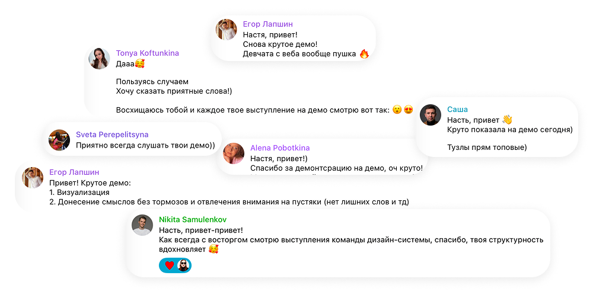
Обо мне
Мне нравится делать сложные вещи понятнее — для системы, команды и человека

Мне нравится делиться знаниями, отвечать на вопросы и создавать инструменты, которыми другим действительно удобно пользоваться.
Люблю находить порядок там, где много разрозненных решений, правил и исключений.
Нахожу боли в процессах и превращаю их в конкретные улучшения для команды и продукта.
Люблю не только проектировать, но и разбираться в реализации, коде и технических ограничениях.
Настя ценнейшая часть команды. Первоклассный специалист. Понимает команду с полуслова. Делает огромные по объему задачи с фантастическим качеством. На Настю всегда можно положиться, очень ее ценю.
Настя очень классный специалист, мастер своего дела! Очень здорово получается коммуницировать и достигать высоких совместных результатов в нашей команде! Отдает качественно проработанные спецификации дизайн макетов, проводит pixel perfect ревью, оперативно реагирует на необходимые доработки макетов, проявляет готовность к компромиссу при ограничениях платформы Android. Всегда готова изучать что-то новое, удивлять коллег дополнительными активностями вроде адвент календаря. Спасибо Насте за огромный вклад в развитие дизайн системы банка!
Настя — замечательный дизайнер, настоящая звезда дизайн-системы! Помимо качественного выполнения своих задач, она всегда показывает класс на демо дизайна, демонстрируя навыки хорошей подачи материала и идеально выполненных презентаций, которые, на мой взгляд, служат источником вдохновения для всего департамента. Всегда очень интересно наблюдать как за развитием компонентов, так и за тем, как их презентуют. Рада быть в одной команде и вдохновляться твоей работой вместе со всеми!
Настя — большой профессионал своего дела. По работе мы часто пересекаемся и могу сказать, что она выполняет свою работу блестяще. Более того, Настя очень активная и предлагает множество крутых фич и идей, очень детально всё прорабатывает и доводит до релиза, делая жизнь всех дизайнеров банка гораздо удобнее и комфортнее. Благодаря Насте появляется много улучшений в дизайн-системе и в целом в макетах. Отдельно хочется отметить очень важные для работы в команде скиллы — эмпатия, позитивный настрой, умение слышать коллег, уважение и помощь, когда это необходимо. Очень рад работать с таким прекрасным человеком и настоящим профессионалом, который всегда старается делать лучше и свою работу, и своих коллег.
Настя очень крутая: собрала редакторам библиотеку шаблонов по всем форматам коммуникаций. Это не совсем её задача, она нам бескорыстно помогла: сами мы бы делали гораздо дольше и не так качественно. Мы очень благодарны, потому что это сильно упрощает и ускоряет работу над задачами. В процессе Настя прислушивалась к обратной связи, очень оперативно что-то добавляла/правила, участвовала в обучении редакторов. В общем, радостно работать с неравнодушными коллегами.
Работать и общаться с Настей — одно удовольствие. Настя всегда превосходит все твои ожидания и решает задачу не на 100, а на 200%, не останавливаясь на просто «хорошем результате», а предлагая идеи как сделать лучше. Жаль, что у нас не так много совместных задач, но когда мне удается поработать с Настей вместе, это всегда одни из лучших рабочих моментов)
Хочу отметить, что работа Анастасии в рамках нашей дизайн-системы заслуживает искреннего восхищения. Она не только обладает превосходной экспертизой, но и умеет удивительно быстро находить идеальные дизайнерские решения даже в условиях сжатых сроков. Благодаря её открытости и доброжелательности общаться с ней — одно удовольствие: она всегда идёт навстречу, терпеливо выслушивает все идеи и даёт подробную обратную связь. Кроме того, оперативная реакция на любые запросы значительно ускоряет рабочий процесс, а её детальное видение дизайна помогает создавать по-настоящему качественные и эстетичные продукты. Благодаря Анастасии наша дизайн-система стала более цельной, удобной для всех участников процесса и вдохновляющей на дальнейшие креативные решения.